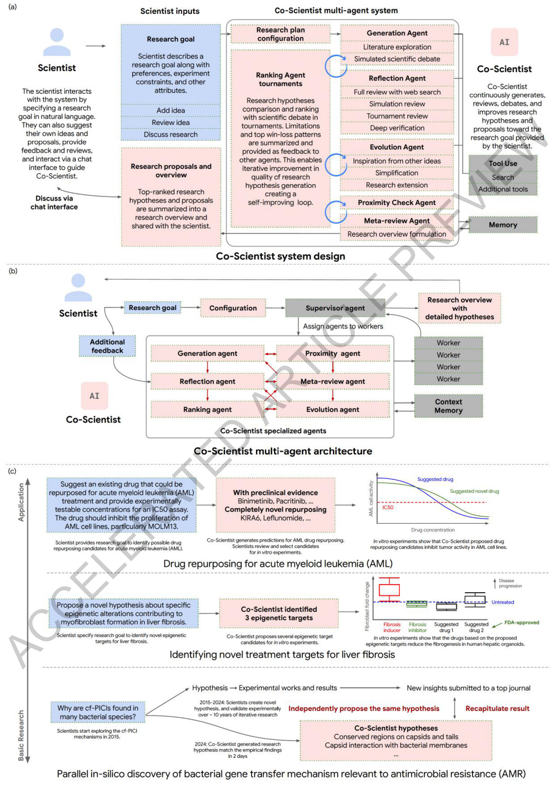
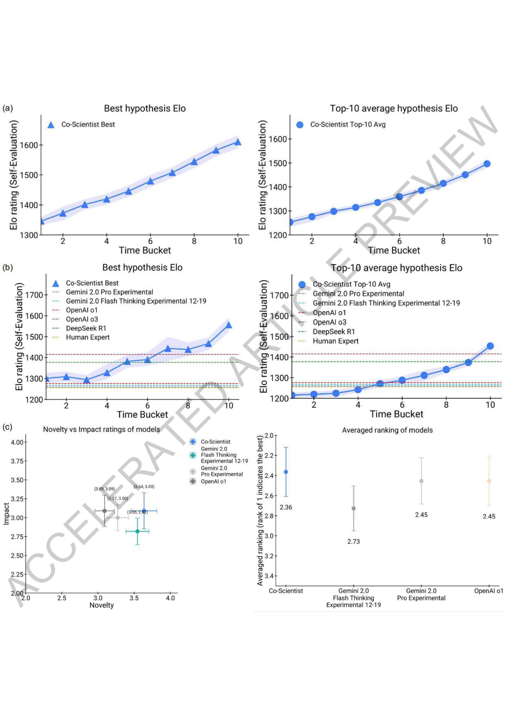
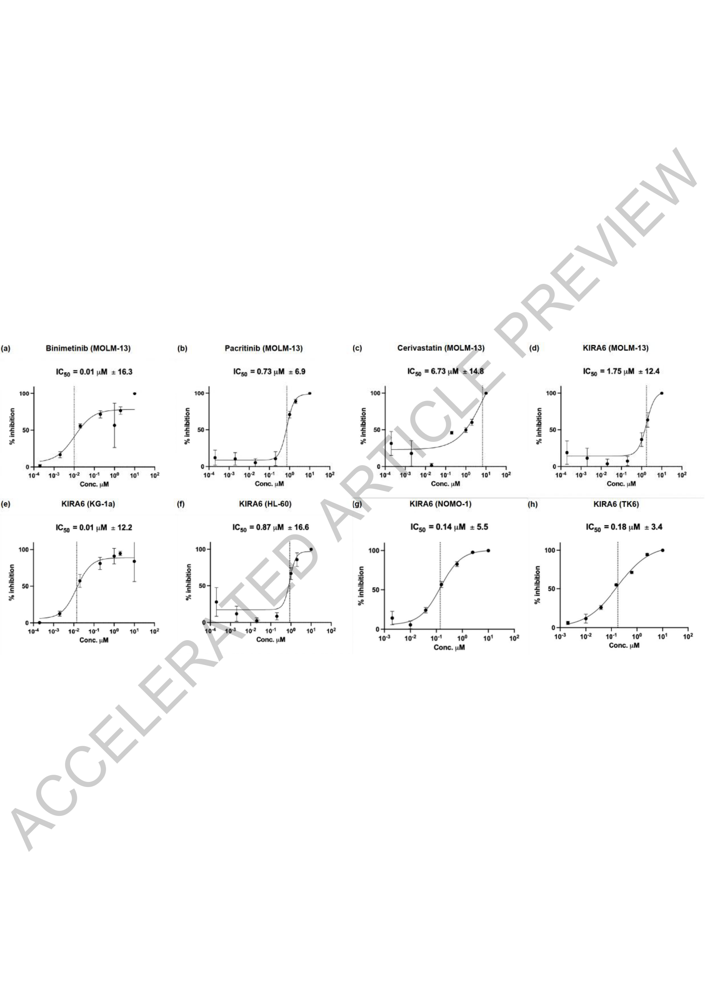
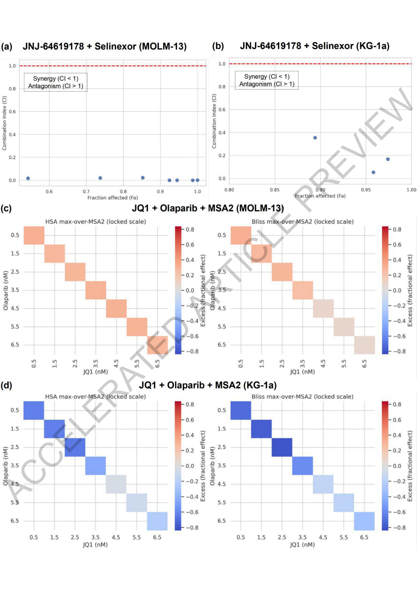
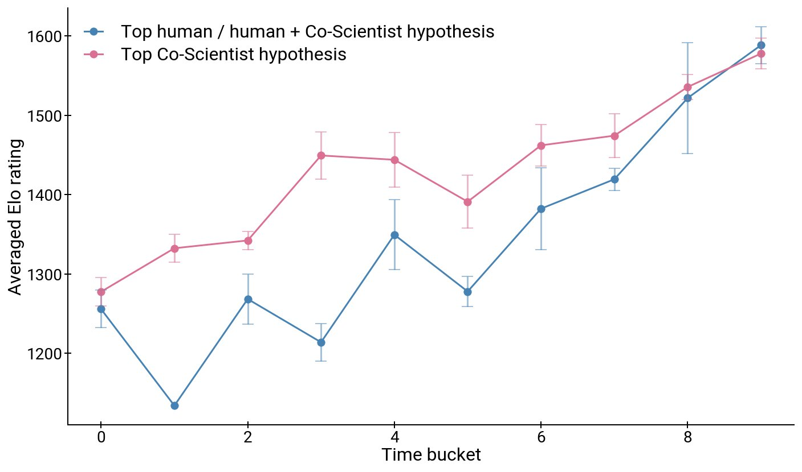
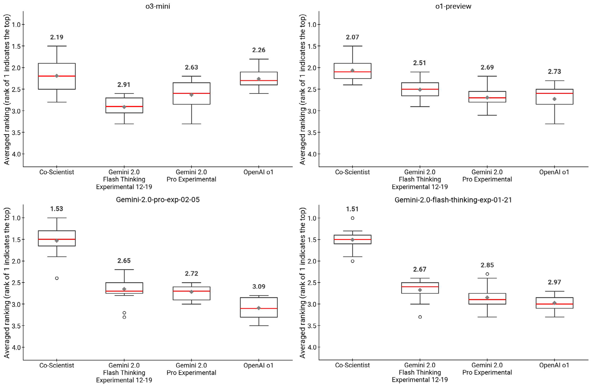
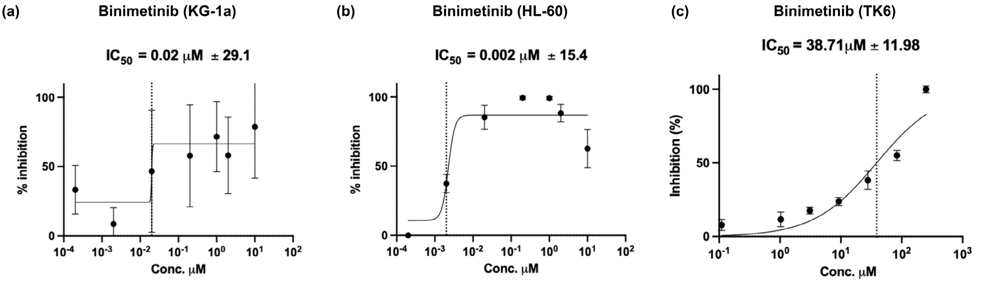
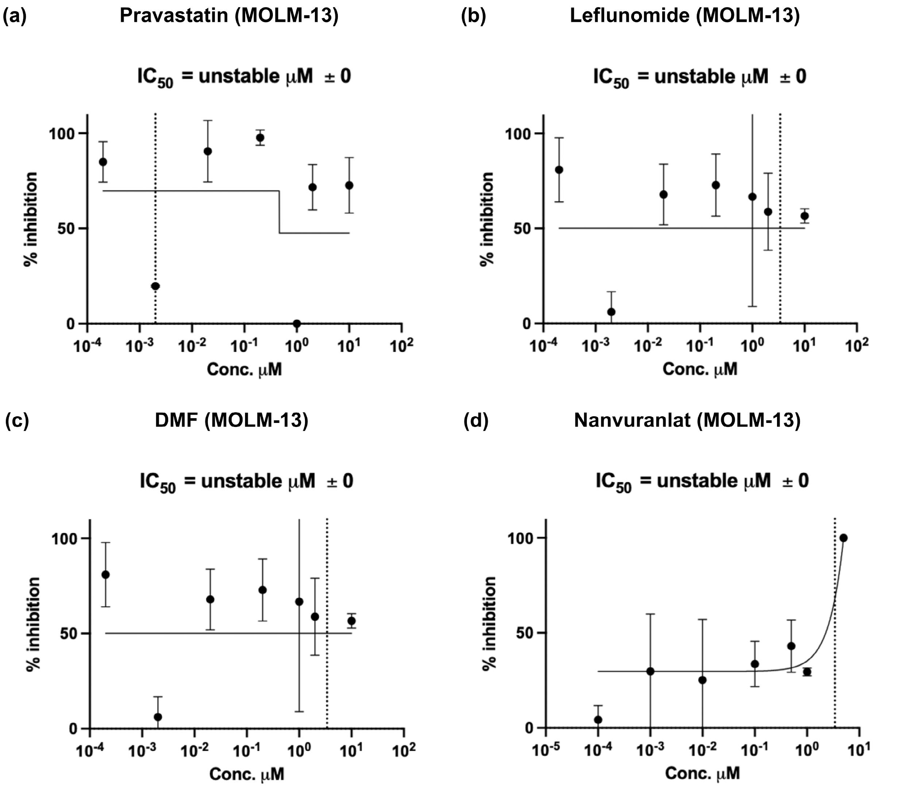
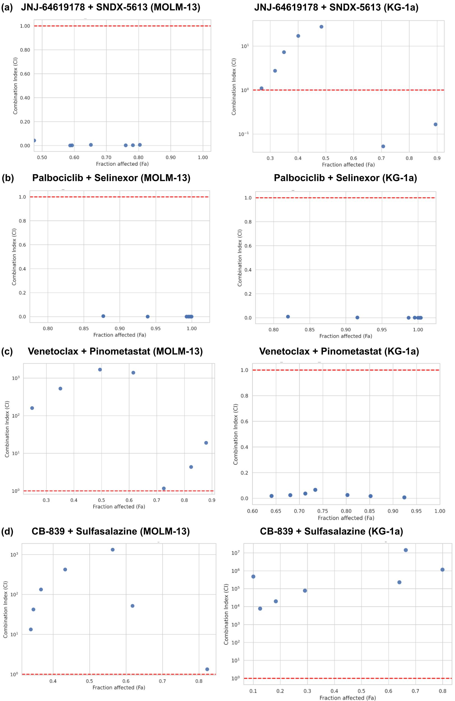
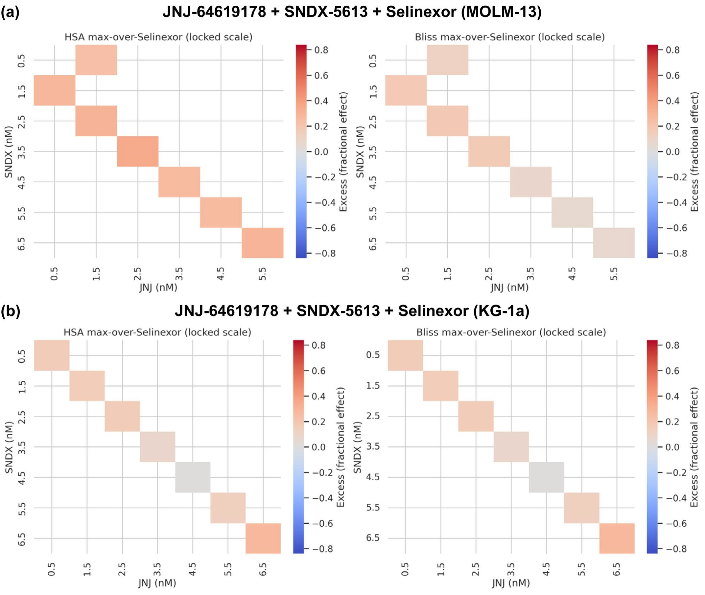

원문: Accelerating scientific discovery with Co-Scientist (Nature, 2026) 저자: Juraj Gottweis, Wei-Hung Weng, Alexander Daryin, Tao Tu 외 (Google DeepMind / Google Research / Stanford / Imperial College London 등) DOI: 10.1038/s41586-026-10644-y
한 문장 요약
과학적 발견은 더 이상 인간 과학자만의 영역이 아니다. Google DeepMind의 Co-Scientist는 Gemini 기반 멀티에이전트 시스템으로, 연구 목표를 자연어로 입력하면 가설을 생성하고 스스로 토론·비판·진화시켜 실험 검증 가능한 연구 가설을 제안한다.
왜 이 논문이 중요한가
과학 연구는 점점 더 깊은 전문성을 요구하는 동시에, 학문 간 경계를 넘나드는 통찰이 혁신을 이끄는 모순적 상황에 놓여 있다. 논문 수는 폭발적으로 늘어났고, 한 사람이 모든 관련 연구를 읽고 종합하는 건 사실상 불가능해졌다.
Co-Scientist는 이 문제에 대한 Google의 답이다. 단순한 문헌 요약이나 “딥 리서치” 도구가 아니라, 새로운 지식을 발굴하고 예상치 못한 연결을 찾아내며 실험 계획까지 수립하는 시스템이다.
시스템 아키텍처
전체 구조
Co-Scientist의 핵심은 과학적 방법론을 멀티에이전트 아키텍처로 구현한 것이다. 아래 Mermaid 다이어그램으로 전체 흐름을 정리했다:
flowchart TB subgraph Scientist["🔬 Scientist-in-the-Loop"] GOAL["연구 목표<br/>(자연어 입력)"] FEEDBACK["피드백 & 아이디어 제안"] end subgraph CoScientist["🤖 Co-Scientist (Gemini 기반)"] direction TB subgraph Agents["전문 에이전트"] GEN["Generation<br/>가설 생성"] REF["Reflection<br/>비판 & 검증"] RANK["Ranking<br/>토너먼트 평가"] EVO["Evolution<br/>가설 진화"] PROX["Proximity<br/>유사도 평가"] META["Meta-review<br/>메타 분석"] end TOOLS["도구 사용<br/>웹 검색, 전문 AI 모델"] MEM["지속적 컨텍스트 메모리"] end subgraph Output["📊 출력"] HYP["랭킹된 가설"] PROPOSAL["연구 제안서"] PROTOCOL["실험 프로토콜"] end GOAL --> GEN FEEDBACK --> GEN GEN --> REF REF --> RANK RANK --> EVO EVO --> GEN PROX --> RANK META --> EVO TOOLS --> REF MEM --> GEN EVO --> HYP EVO --> PROPOSAL EVO --> PROTOCOL

Figure 1. Co-Scientist의 전체 설계, 멀티에이전트 아키텍처, 실험 검증 요약. (a) 시스템 개요 (b) 멀티에이전트 상세 구조 (c) 세 가지 생의학적 적용 사례전문 에이전트 구성
| 에이전트 | 역할 | 핵심 기능 |
|---|---|---|
| Generation | 가설 생성 | 연구 목표와 문헌 기반 초기 가설 도출 |
| Reflection | 비판·검증 | 외부 검색 도구로 가설 타당성 검증, hallucination 방지 |
| Ranking | 평가·비교 | 과학적 토론(self-play) 방식으로 Elo 레이팅 산출 |
| Evolution | 가설 진화 | 토너먼트 결과 기반 반복 개선 |
| Proximity | 유사도 관리 | 유사 가설 간 비교 우선으로 효율성 향상 |
| Meta-review | 메타 분석 | 전체 프로세스 품질 관리 |
핵심 메커니즘: 생성 → 토론 → 진화 루프
sequenceDiagram participant S as Scientist participant G as Generation participant R as Reflection participant K as Ranking participant E as Evolution S->>G: 연구 목표 전달 G->>R: 초기 가설 생성 R->>R: 외부 검색으로 검증 R->>K: 검증된 가설 전달 K->>K: Elo 토너먼트 (self-play) K->>E: 랭킹 결과 E->>E: 우승 특징 결합 → 새 가설 E->>G: 진화된 가설 피드백 Note over G,E: 반복 (test-time compute scaling) E->>S: 최종 랭킹된 가설 제안
1. 비동기 태스크 실행 프레임워크 각 에이전트가 독립적으로 실행되며, 연산 자원을 유연하게 배분할 수 있다. 이는 test-time compute 스케일링의 기반이 된다.
2. 토너먼트 진화 과정 가설들이 Elo 레이팅 기반 토너먼트에서 경쟁한다. 승패 패턴을 학습하고, 우승 가설의 특징을 다음 세대로 전달하는 진화적 접근이다.
3. 과학자-인-더-루프 과학자가 자연어로 연구 목표를 지정하고, 피드백을 제공하며, 초기 아이디어를 제안할 수 있다.
Test-time Compute 스케일링
xychart-beta title "Test-time Compute에 따른 가설 품질 향상 (Elo 레이팅)" x-axis "시간 버킷 (10% 단위)" [1, 2, 3, 4, 5, 6, 7, 8, 9, 10] y-axis "Elo Rating" 700 --> 1100 line [780, 820, 850, 880, 910, 935, 960, 985, 1010, 1050] line [820, 870, 900, 930, 955, 975, 995, 1020, 1045, 1080]
203개 연구 목표에 대한 분석에서, 더 많은 연산 시간을 할당할수록 가설 품질이 지속적으로 향상되었다. Elo 레이팅이 직접적인 최적화 타깃이 아님에도, 시스템의 정보 피드백 루프를 통해 자연스럽게 개선된다.

Figure 2. Test-time compute 확장이 Co-Scientist의 과학적 사고 능력에 미치는 영향. (a) Elo 레이팅 추이 (b) 다른 AI 시스템과의 비교 (c) 전문가 평가 결과15개 전문가 큐레이션 난제에서 Co-Scientist는 다음 모델들을 능가했다:
flowchart LR subgraph Comparison["Elo 레이팅 비교 (15개 전문가 큐레이션 난제)"] direction TB CS["🥇 Co-Scientist<br/>~1080"] O3["OpenAI o3<br/>~950"] R1["DeepSeek R1<br/>~900"] O1["OpenAI o1<br/>~850"] GP["Gemini 2.0 Pro<br/>~800"] GF["Gemini 2.0 Flash<br/>~700"] end
더 중요한 건 성능 포화의 징후가 없다는 점이다.
3가지 생의학적 실증 검증
flowchart TB subgraph Validations["실험적 검증 (End-to-End)"] direction LR V1["💊 Drug Repurposing<br/>AML (급성 골수성 백혈병)<br/>복잡도: 중간"] V2["🧬 Novel Target<br/>간섬유화<br/>복잡도: 높음"] V3["🦠 AMR 기전<br/>항생제 내성<br/>복잡도: 매우 높음"] end
1. AML 약물 재포지셔닝
검색 공간: 2,300개 승인 약물 × 34개 암종
flowchart LR subgraph Input["입력"] GOAL["AML 약물 재포지셔닝<br/>후보 발굴"] end subgraph AI["Co-Scientist 예측"] B["Binimetinib<br/>IC50 = 2nM<br/>(MOLM-13)"] K["KIRA6<br/>IC50 = 10nM<br/>(KG-1a)"] P["Pacritinib"] C["Cerivastatin"] end subgraph Result["실험 결과"] R1["✅ 선택적 독성 확인<br/>(AML vs 비-AML)"] R2["✅ 18배 치료 창<br/>(KIRA6)"] end GOAL --> AI --> Result

Figure 3. Co-Scientist가 생성한 단일 약물 재포지셔닝 후보의 in vitro 생물학적 검증. (a-h) 각 약물의 용량-반응 곡선 및 IC50 값단일 약물을 넘어 약물 조합 시너지도 제안했다. 7개 조합을 MOLM-13, KG-1a에서 평가:

Figure 4. Co-Scientist가 예측한 AML 시너지 약물 조합 검증. (a-d) JNJ-64619178 + Selinexor 및 JQ1 + Olaparib + MSA2 조합의 상호작용 분석2. 간섬유화 신규 타겟 발굴
인간 간 오가노이드와 실시간 세포 이미징을 활용하여 간섬유화의 새로운 후생학적(epigenetic) 타겟을 찾았다.
flowchart LR A["Co-Scientist<br/>후생학적 타겟 예측"] --> B["전문가 선정<br/>Top 3 타겟"] B --> C["간 오가노이드<br/>실험 검증"] C --> D["✅ 2/3 타겟<br/>항섬유화 활성 확인"] D --> E["🔑 Vorinostat<br/>FDA 승인 항암제<br/>→ 간섬유화 재포지셔닝"]
주목할 점: Vorinostat은 이미 FDA 승인된 항암제다. 암과 간섬유화라는 전혀 다른 분야를 연결하는 예상치 못한 발견이다.
3. 항생제 내성 기전 규명 — 가장 인상적인 검증
timeline title cf-PICIs 기전 독립 발견 타임라인 section Co-Scientist 이틀 : 최소 배경정보만 제공받음 이틀 : cf-PICIs가 다양한 파지 꼬리와<br/>상호작용하여 숙주 범위 확장<br/>→ 최우선 가설 제안 section 독립 연구팀 수개월 : 게놈 및 실험 연구 진행 수개월 : 동일 기전 실험적 규명 section 결과 수렴 : 두 결과가 정확히 일치<br/>(동료 평론 완료 전)
Co-Scientist는 단 이틀 만에 cf-PICIs(캡시드 형성 파지 유도 염색체 섬)가 다양한 파지 꼬리와 상호작용하여 숙주 범위를 확장한다는 가설을 최우선으로 제안했다. 이는 독립적으로 진행 중이던 다른 연구팀의 실험적 발견과 정확히 일치했다.
전문가 평가 결과
11개 연구 목표에 대한 생의학 전문가 평가:
xychart-beta title "전문가 평가: 신규성 vs 임팩트 (5점 만점)" x-axis "모델" [0, 1, 2, 3, 4, 5] y-axis "점수" 0 --> 5 bar [3.64, 2.8, 2.5, 2.0, 2.8, 2.3] bar [3.09, 2.5, 2.3, 2.0, 2.5, 2.0]
| 모델 | 선호도 순위 | 신규성 (5점 만점) | 임팩트 (5점 만점) |
|---|---|---|---|
| Co-Scientist | 2.36 | 3.64 | 3.09 |
| Gemini 2.0 Pro | ~2.9 | ~2.8 | ~2.5 |
| OpenAI o1 | ~3.2 | ~2.5 | ~2.3 |
| Gemini 2.0 Flash | ~3.5 | ~2.0 | ~2.0 |
LLM-as-a-judge 평가(OpenAI o3-mini, Gemini 등 4개 모델)에서도 Co-Scientist가 일관되게 최우선으로 선택되었다.
Extended Data






에이블레이션 분석: 왜 멀티에이전트인가
flowchart TB subgraph Ablation["에이블레이션 결과"] A1["Reflection + 외부 검색<br/>→ ✅ Hallucination 방지"] A2["Ranking + 과학적 토론 프롬프트<br/>→ ✅ 평가 품질 향상<br/>위치 편향 감소"] A3["Evolution + 반복 개선<br/>→ ✅ 가설 품질 대폭 향상"] end CONC["결론: 단일 모델이 아무리 강력해도<br/>전문화된 에이전트 간의<br/>구조화된 협업이 압도적"] Ablation --> CONC
단일 모델이 아무리 강력해도, 전문화된 에이전트 간의 구조화된 협업이 낸 결과를 따라오지 못한다는 걸 보여준다.
한계
논문은 솔직하게 한계를 인정한다:
- 지식의 경계: 오픈액세스 문헌에 의존 → 페이월 뒤의 중요 연구 누락 가능
- 부정적 결과 부재: 성공한 실험만 보고하는 문헌의 편향 상속
- 기저 LLM의 한계: 할루시네이션, 편향 등 Gemini 자체의 한계
- 번역의 도전: in vitro ≠ in vivo ≠ 임상 성공
- 재현성 위기: 가드레일 없는 사용은 과학적 재현성 위기 악화 가능
시사점
mindmap root((Co-Scientist 시사점)) 과학자 증강 대체가 아닌 협업 Scientist-in-the-loop 자연어 인터페이스 Test-time Compute 과학적 추론에서도 스케일링 법칙 성립 더 생각할수록 더 나은 가설 성능 포화 징후 없음 모델 불가지론 Gemini 3, GPT 5.4 등 호환 프레임워크 재학습 불필요 속도 혁명 이틀 만에 독립 발견 재현 대규모 wet-lab 스크리닝 없이 약물 조합 제안 가능
- AI는 과학자를 대체하는 게 아니라 증강한다.
- Test-time compute는 과학적 추론에서도 스케일링 법칙이 성립한다.
- 모델 불가지론적 아키텍처로 향후 더 강력한 모델 혜택 즉시 가능
- 이틀 만에 독립적 발견을 재현한 항생제 내성 사례는 속도 혁명의 증거
이 포스트는 Google DeepMind의 Nature 논문 “Accelerating scientific discovery with Co-Scientist”를 바탕으로 작성되었습니다. 원문은 Nature 웹사이트에서 확인할 수 있습니다. Figure 이미지는 reference PDF에서 PyMuPDF로 추출했습니다.